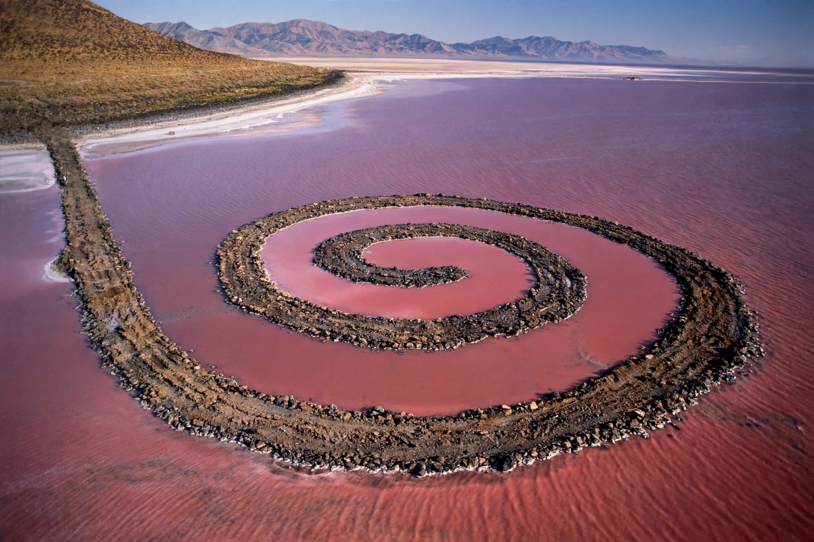

| Born | January 2, 1938, Passaic, New Jersey, U.S. |
|---|---|
| Died | July 20, 1973 (aged 35), near Amarillo, Texas |
| Known for | Land art, sculpture, writing |
| Notable work | Spiral Jetty (1970) |
Robert Smithson (January 2, 1938 – July 20, 1973) was an American artist known for sculpture and land art, especially his concept of entropy and his writings on art, landscape, and geology.
Smithson studied at the Art Students League and briefly at Brooklyn Museum School. Early work included painting and collage influenced by science fiction and natural history. By the mid-1960s he became a leading figure in Minimalism and then land art.
His best-known work, Spiral Jetty (1970), is a 1,500-foot-long coil of basalt, earth, and salt crystals extending into the Great Salt Lake in Utah. Other earthworks include Broken Circle/Spiral Hill in the Netherlands and Amarillo Ramp, completed posthumously.
Smithson developed the ideas of site and nonsite — bins of material from a distant site displayed in a gallery — and wrote influential essays such as "Entropy and the New Monuments" and "A Tour of the Monuments of Passaic, New Jersey."
He died in a plane crash in 1973 while surveying the site for Amarillo Ramp. His work, managed by the Holt/Smithson Foundation, remains central to discussions of environmental art.
See also: Rococo for contrasting art history, Roman Forum.